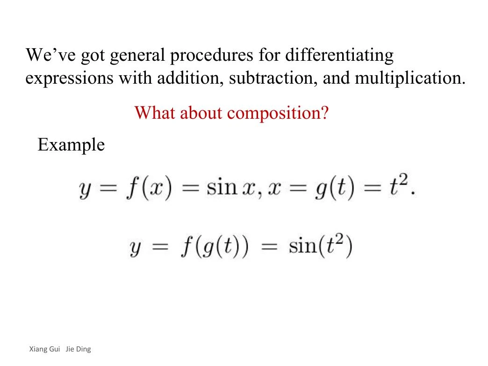
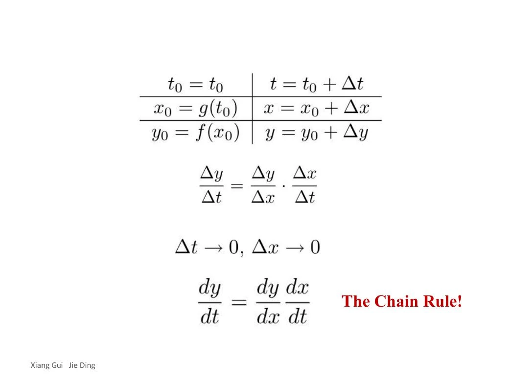

HDD4010 工程数学 I · 第 03 / 08 讲
第 2 章 · 导数定义与求导法则
Definition of the Derivative and Differentiation Rules
所属章节：第 2 章 导数与微分
资料来源 · 2 项 / 已附 0 项
Topic 3/EMI_Week3_Lecture1.pdf未附原文件Topic 3/EMI_Week3_Lecture2.pdf未附原文件
未附文件仅列原始名称；版本与核对日期由维护者登记。
本节定位
上一讲用极限求出了瞬时速度，这一讲把这套动作抽象成一个新函数——导数（derivative）。核心只有一句话：导数就是切线斜率，而切线斜率是割线斜率当两点无限靠近时的极限。理解了这句话，后面所有求导公式都只是「把这个极限一次算完，以后直接查表」的产物。
本讲分两半：前半（Topic 3 第一次课）从几何出发，建立切线、法线、牛顿商、导数定义、微分与和差、常数倍、幂法则，并证明「可导必连续」；后半（第二次课）补齐乘积、倒数、商、链式四大法则与六个三角函数的导数，其中两个基本三角极限的证明是全部三角求导的地基。
学完本节你应当能够：
- 用差商极限求曲线在一点的切线方程与法线方程
- 用定义（而不是公式）求 x²、1/x、√x 的导数
- 写出导数的四种记号，并在一点处正确使用求值符号
- 熟练使用乘积、倒数、商、链式法则处理复合表达式
- 用面积夹逼证明 lim sin θ/θ = 1，并据此推出 sin、cos 的导数
- 识别竖直切线、尖点等「导数不存在」的几何形态
3.1 从「切线」这个词说起
欧几里得对圆的切线给过一个纯几何定义：与圆只交于一点（且不穿过）的直线叫圆的切线。这个定义对圆很好用，但对一般曲线立刻失效——例如抛物线的切线可能与曲线交于两点，拐点处的切线也可能再次穿过曲线。
所以微积分换了一个可操作的定义：切线是割线的极限位置。在曲线上取定点 P 与动点 Q，过两点的直线叫割线（secant line）；让 Q 沿曲线不断靠近 P，割线会绕 P 旋转并趋于一个极限位置，这个极限位置的直线就是 P 处的切线（tangent line）。
3.2 割线斜率与牛顿商
设 P(x₀, f(x₀))、Q(x₀ + Δx, f(x₀ + Δx))（Δx ≠ 0）。割线 PQ 的斜率为
tan φ = Δy/Δx = (f(x₀ + Δx) − f(x₀))/Δx。
这个表达式称为 f 在 x₀ 处的牛顿商（Newton quotient）或差商（difference quotient）。它有两个含义：几何上是割线斜率，物理上是区间上的平均变化率。Δx 可正可负（Q 在 P 右侧或左侧），不影响取极限的结果。
3.3 切线斜率：导数的几何定义
若 f 在 x₀ 连续，且极限
m = lim_{Δx→0} Δy/Δx = lim_{Δx→0} (f(x₀ + Δx) − f(x₀))/Δx
存在（有限），则过 P(x₀, f(x₀)) 且斜率为 m 的直线就是曲线在 P 处的切线；这个 m 就是 f 在 x₀ 处的（瞬时）变化率。
用 x 代替 x₀、把极限值当成一个新函数，就得到导数：
f′(x) = lim_{Δx→0} (f(x + Δx) − f(x))/Δx = lim_{h→0} (f(x + h) − f(x))/h，
前提是这个极限存在；存在时称 f 在 x 处可导（differentiable）。几何上 f′(x₀) 就是曲线 y = f(x) 在 x = x₀ 处切线的斜率。
3.4 切线方程与一个面积练习
已知切点 (a, f(a)) 与斜率 f′(a)，由点斜式立刻写出切线方程：
y = f(a) + f′(a)(x − a)。
源文件例子：求 y = x² 在 (1, 1) 处的切线。f(1) = 1，用定义求斜率：
lim_{Δx→0} ((1+Δx)² − 1)/Δx = lim (2Δx + Δx²)/Δx = lim (2 + Δx) = 2，
故切线为 y = 2(x − 1) + 1，即 y = 2x − 1。
源文件随后追问：这条切线与两坐标轴围成的三角形面积是多少？一般地，对 y = x² 在 (x₀, x₀²) 处，斜率 2x₀，切线 y = 2x₀x − x₀²。令 y = 0 得 x 截距 x₀/2；令 x = 0 得 y 截距 −x₀²。于是当 x₀ > 0 时三角形面积
A = (1/2)·(x₀/2)·(x₀²) = x₀³/4。代入 x₀ = 1 得 A = 1/4。
3.5 曲线在一点的斜率与法线
曲线 y = f(x) 在 x₀ 处的「斜率」就是该点切线的斜率（若存在）。例如 y = 1/x 在 x = 2：
lim_{Δx→0} (1/(2+Δx) − 1/2)/Δx = lim (−Δx)/(2(2+Δx)Δx) = lim −1/(2(2+Δx)) = −1/4。
法线（normal line）是过切点且与切线垂直的直线。若切线斜率 m ≠ 0，法线斜率为 −1/m；若切线水平（m = 0），法线竖直；若切线竖直，法线水平。
源文件例子：y = x² 在 (1, 1)，切线斜率 2，故法线斜率 −1/2，方程 y = −(1/2)(x − 1) + 1 = −x/2 + 3/2。
3.6 竖直切线与尖点：导数不存在的几何形态
若 f 在 x₀ 连续而差商的极限为 ±∞，则曲线在该点的切线是竖直线 x = x₀（斜率不存在，但切线存在）。若极限既不是有限值、也不是同号的 ±∞（例如左右两侧分别趋于 +∞ 与 −∞），则切线不存在。
源文件两个对比例子（都在 x = 0）：
f(x) = x^{1/3}：Δy/Δx = (Δx)^{1/3}/Δx = (Δx)^{-2/3} → +∞（两侧都是 +∞），故有竖直切线x = 0f(x) = x^{2/3}：Δy/Δx = (Δx)^{-1/3}，右极限+∞、左极限−∞，方向不一致，故没有切线，曲线在原点形成尖点（cusp）
x^{1/3} 在 0 处不可导（斜率不是有限数），但切线存在（竖直线）。答题时要区分「导数不存在」与「切线不存在」：前者可能是竖直切线，后者才是真正的几何断裂。3.7 导数的记号与求值符号
同一个导数有四种常见写法：
- Lagrange（撇号）：
f′(x)、y′——最简洁，适合写公式 - Leibniz：
dy/dx、df/dx——强调「y 对 x 的变化率」，链式法则里最方便 - Euler（算子）：
Df、D_x f——把求导看成作用在函数上的算子 - Newton（点号）：
ẏ——物理学中表示对时间求导
在一点 x = x₀ 处的取值可写成 f′(x₀)、y′|_{x=x₀}、dy/dx|_{x=x₀}、D_x y|_{x=x₀}，其中竖线 |_{x=x₀} 叫求值符号（evaluation symbol），含义是「先把导数算成含 x 的表达式，再把 x₀ 代入」。
x = x₀ 代进 f 再求导，得到的是常数（导数为 0），整题作废。3.8 微分
dx 表示 x 的一个（任意）改变量。对可导函数 y = f(x)，微分（differential）定义为
dy = f′(x) dx。
当 dx 很小时，dy 近似等于真实的改变量 Δy：Δy ≈ f′(x)Δx。这就是「用切线代替曲线」的线性近似，也是误差估计的基础。
源文件例子：y = x² 时 dy = 2x dx；y = 1/x 时 dy = −dx/x²。注意 dy/dx 因此可以真的当作「两个微分之商」来运算——这正是 Leibniz 记号好用的原因，链式法则 dy/dx = (dy/du)(du/dx) 看起来就像分数约分。
3.9 用定义求导三个基本例子
(a) f(x) = x²：f′(x) = lim ((x+Δx)² − x²)/Δx = lim (2xΔx + Δx²)/Δx = lim (2x + Δx) = 2x。
(b) f(x) = 1/x：f′(x) = lim (1/(x+Δx) − 1/x)/Δx = lim (−Δx)/(x(x+Δx)Δx) = lim −1/(x(x+Δx)) = −1/x²。
(c) f(x) = √x：同乘共轭 (√(x+Δx) + √x)，分子变为 Δx，与分母约去，得 f′(x) = lim 1/(√(x+Δx) + √x) = 1/(2√x)（x > 0）。
三个例子共用同一条流水线：写差商 → 展开或乘共轭 → 约掉分母的 Δx → 令 Δx → 0。这条流水线是「用定义求导」的唯一标准流程。
3.10 幂法则
对正整数 n，(xⁿ)′ = n xⁿ⁻¹。证明思路：由二项式展开
(x + Δx)ⁿ = xⁿ + n xⁿ⁻¹Δx + O(Δx²)，
其中 O(Δx)² 是「所有含 (Δx)²、…、(Δx)ⁿ 的项」的简写。代回差商，xⁿ 相消，剩下 n xⁿ⁻¹ + O(Δx)，令 Δx → 0 即得。这个法则对任意实数指数也成立（x^a，x > 0），第 5 讲会用对数求导重新证明。
3.11 可导必连续，但连续不一定可导
定理：若 f 在 x 处可导，则 f 在 x 处连续。证明只需一个变形：
lim_{Δx→0}(f(x+Δx) − f(x)) = lim_{Δx→0} [(f(x+Δx) − f(x))/Δx]·Δx = f′(x)·0 = 0。
所以 lim_{Δx→0} f(x+Δx) = f(x)，即连续。
逆命题不成立：f(x) = |x| 在 x = 0 连续，但左导数 −1、右导数 1，导数不存在。连续的曲线可以有「尖角」，尖角处没有切线斜率。
3.12 左导数、右导数与区间上的可导性
对定义在闭区间 [a, b] 上的函数：右导数 f′₊(a) = lim_{Δx→0⁺} (f(a+Δx) − f(a))/Δx，左导数 f′₋(b) = lim_{Δx→0⁻} (f(b+Δx) − f(b))/Δx。
称 f 在 [a, b] 上可导，如果 f′₊(a)、f′₋(b) 存在，且对每个内点 x ∈ (a, b) 都有 f′(x) 存在。
源文件用 f(x) = |x| 演练：f′₊(0) = lim_{Δx→0⁺} (|Δx| − 0)/Δx = 1，f′₋(0) = lim_{Δx→0⁻} (|Δx| − 0)/Δx = −1。两者不等，故 f′(0) 不存在。
3.13 基本导数表
| f(x) | f′(x) | 说明 |
|---|---|---|
c（常数） | 0 | 水平线斜率为 0 |
x | 1 | 斜率恒为 1 |
x² | 2x | 幂法则 n = 2 |
1/x | −1/x² | n = −1 |
√x | 1/(2√x) | n = 1/2 |
x^a | a x^{a−1} | 任意实数指数 |
这张表必须做到「看到就写」，因为后面所有法则都只是把这张表往外传播一层。
3.14 和、差与常数倍法则
若 f、g 在 x 可导，c 为常数，则 (f ± g)′(x) = f′(x) ± g′(x)，(cf)′(x) = c f′(x)。
和的证明只需把差商拆开：[(f+g)(x+Δx) − (f+g)(x)]/Δx = [(f(x+Δx) − f(x))/Δx] + [(g(x+Δx) − g(x))/Δx]，再对两项分别取极限。常数倍同理，把 c 提出来即可。
源文件任务：f(x) = x³ + 4x² − 5x − 9，逐项求导得 f′(x) = 3x² + 8x − 5；y = x⁴/8 − 2x^{5/2}，得 dy/dx = (1/2)x³ − 5x^{3/2}。
3.15 乘积法则
(fg)′(x) = f′(x)g(x) + f(x)g′(x)。
证明的关键是「加一项再减一项」：把差商写成
[f(x+Δx)g(x+Δx) − f(x+Δx)g(x) + f(x+Δx)g(x) − f(x)g(x)]/Δx，
前两项提出 f(x+Δx)、后两项提出 g(x)，分别取极限并用 f 的连续性（可导 ⇒ 连续），即得 f′g + fg′。
源文件例子：d/dx[(x² − 1)(x³ + 3)]。用乘积法则：2x(x³+3) + (x²−1)·3x² = 2x⁴ + 6x + 3x⁴ − 3x² = 5x⁴ − 3x² + 6x。若先展开再求导：(x⁵ − x³ + 3x² − 3)′ = 5x⁴ − 3x² + 6x，结果一致。
f′g′ = (2x)(3x²) = 6x³，与正确结果 5x⁴ − 3x² + 6x 完全不同。3.16 倒数法则
若 f 在 x 可导且 f(x) ≠ 0，则 (1/f)′(x) = −f′(x)/f(x)²。
证明：[1/f(x+Δx) − 1/f(x)]/Δx = [f(x) − f(x+Δx)]/[Δx·f(x+Δx)f(x)]，第一个因子趋于 −f′(x)，第二个因子趋于 1/f(x)²。
源文件任务：(a) d/dx[1/(x²+1)] = −2x/(x²+1)²；(b) 1/(x + 1/x) 先化简为 x/(x²+1)，再用商法则得 (1 − x²)/(x²+1)²。
3.17 商法则
若 f、g 在 x 可导且 g(x) ≠ 0，则
(f/g)′(x) = [f′(x)g(x) − f(x)g′(x)]/g(x)²。
证明：把 f/g 写成 f · (1/g)，用乘积法则与倒数法则：f′·(1/g) + f·(−g′/g²) = (f′g − fg′)/g²。
记忆口诀：「上导下不导，减去上不导下导，除以分母平方」。分子顺序不能颠倒，否则差一个负号。
源文件例子：y = (1 − x²)/(1 + x²)，y′ = [(−2x)(1+x²) − (1−x²)(2x)]/(1+x²)² = (−2x − 2x³ − 2x + 2x³)/(1+x²)² = −4x/(1+x²)²。
源文件法线例子：y = (x+1)/(x−1) 在 x = 2。y′ = [(x−1) − (x+1)]/(x−1)² = −2/(x−1)²，在 2 处为 −2；法线斜率 1/2；切点 (2, 3)；法线 y = (1/2)(x − 2) + 3 = x/2 + 2。
3.18 链式法则
若 g 在 x 可导、f 在 g(x) 可导，则复合函数 f ∘ g 在 x 可导，且
(f ∘ g)′(x) = f′(g(x))·g′(x)。
Leibniz 写法：若 y = f(u)、u = g(x)，则 dy/dx = (dy/du)·(du/dx)。
这条法则的作用是「由外向内逐层剥」：最外层求导（内层原样保留），乘以内层的导数，如此反复。例如 y = (6x − 7)⁵：外层是 u⁵，内层 u = 6x − 7，故 y′ = 5(6x−7)⁴ · 6 = 30(6x−7)⁴。
源文件任务：y = √(1 + x²)，外层 √u、内层 1 + x²，dy/dx = (1/(2√(1+x²)))·2x = x/√(1+x²)。
5(6x−7)⁴ 而不是 30(6x−7)⁴）；② 把复合的顺序弄反（f ∘ g 与 g ∘ f 的导数一般不同，源文件专门用一页强调「Not Commutative」）。逐层写清「外层是谁、内层是谁」再动笔。3.19 两个基本三角极限
一切三角函数的导数都依赖两个极限。第一个：lim_{θ→0} sin θ/θ = 1。
证明（面积夹逼，弧度制）：在单位圆中取 0 < θ < π/2，A(1, 0)、P(cos θ, sin θ)、T(1, tan θ)。比较三块面积：
三角形 OAP 面积 = (1/2)·1·sin θ = (1/2)sin θ；扇形 OAP 面积 = (1/2)·1²·θ = θ/2；三角形 OAT 面积 = (1/2)·1·tan θ = (1/2)tan θ。
由「三角形 ⊂ 扇形 ⊂ 三角形」，得 sin θ < θ < tan θ。三边同除以 sin θ > 0：1 < θ/sin θ < 1/cos θ；再取倒数（都为正，不等号反向）：cos θ < sin θ/θ < 1。令 θ → 0⁺，两端都趋于 1，由夹逼定理得右极限为 1。
对 −π/2 < θ < 0 用奇偶性：sin θ/θ = sin(−θ)/(−θ)，化为正角情形，故左极限也是 1，于是双侧极限为 1。
第二个：lim_{θ→0} (cos θ − 1)/θ = 0。用半角恒等式 cos θ − 1 = −2 sin²(θ/2)：
(cos θ − 1)/θ = −2 sin²(θ/2)/θ = −[sin(θ/2)/(θ/2)]·sin(θ/2) → −1·0 = 0。
sin 与 cos 的导数公式完全由它们推出，而 tan、sec、cot、csc 的导数又由 sin、cos 加商法则推出。所以整章三角求导只有这两个「根」。3.20 sin 与 cos 的导数
(sin x)′ = cos x。证明：用和角公式 sin(x + Δx) = sin x cos Δx + cos x sin Δx，
(sin(x+Δx) − sin x)/Δx = sin x·(cos Δx − 1)/Δx + cos x·(sin Δx/Δx) → sin x·0 + cos x·1 = cos x。
(cos x)′ = −sin x。证明：用余角恒等式 cos x = sin(π/2 − x) 与链式法则：
(cos x)′ = cos(π/2 − x)·(−1) = −sin x。
lim sin θ/θ = π/180，导数会多出一个常数因子。所有公式的正确性都以弧度制为前提，这也是本课一律使用弧度的原因。3.21 另外四个三角函数
定义与基本性质：
| 函数 | 定义 | 定义域 | 周期 | 奇偶性 |
|---|---|---|---|---|
tan x | sin x/cos x | x ≠ π/2 + kπ | π | 奇函数 |
cot x | cos x/sin x | x ≠ kπ | π | 奇函数 |
sec x | 1/cos x | x ≠ π/2 + kπ | 2π | 偶函数 |
csc x | 1/sin x | x ≠ kπ | 2π | 奇函数 |
四个导数（全部由 sin、cos 加商法则或倒数法则推出）：
(tan x)′ = sec²x：(cos·cos − sin·(−sin))/cos² = 1/cos²(cot x)′ = −csc²x：(−sin·sin − cos·cos)/sin² = −1/sin²(sec x)′ = sec x tan x：−(−sin)/cos² = sin/cos²(csc x)′ = −csc x cot x：−cos/sin²
连续性与可导性：sin、cos 处处连续；其余四个在其定义域内连续（间断只出现在分母为零处）；六个函数都在各自定义域内可导。例如 tan 在 x ≠ π/2 + kπ 处可导。
源文件的三角导数总表，建议按「谁求导变成谁」记：sin → cos → −sin → −cos → sin 四步循环；tan → sec²、sec → sec·tan、cot → −csc²、csc → −csc·cot。
原版图页（源 PDF 插图页）




拓展深化 3.1.1 乘积法则（Product Rule）的严密代数推导
深入差商结构 $\frac{f(x+h)g(x+h) - f(x)g(x)}{h}$，引入中间项拆分为两个极限项，严谨展现可微性与连续性的内在联系。
设 $u(x) = f(x)g(x)$，且 $f, g$ 在 $x$ 处均可微（由可微性可知 $f$ 必在 $x$ 处连续，即 $\lim_{h \to 0} f(x+h) = f(x)$）。根据导数微商定义：
推导关键技巧：在分子中减去并加上辅助项 $f(x+h)g(x)$：
利用极限的线性运算法则及连续性 $\lim_{h \to 0} f(x+h) = f(x)$：
证毕。此推导清晰展现了微积分代数构造中引入对称平衡项的核心技巧。
| English | 中文 | 说明 / 例句 |
|---|---|---|
| tangent line | 切线 | The limiting position of secant lines through a fixed point. |
| secant line | 割线 | The line through two distinct points of a curve. |
| difference quotient | 差商（牛顿商） | (f(x+h) − f(x))/h, the slope of the secant and the average rate of change. |
| derivative | 导数 | f′(x) = lim_{h→0} (f(x+h) − f(x))/h; the slope of the tangent. |
| differentiable | 可导 | The derivative exists at that point; differentiability implies continuity. |
| normal line | 法线 | The line through the point perpendicular to the tangent; slope −1/m. |
| vertical tangent | 竖直切线 | The difference quotient tends to ±∞ in the same direction; x = a. |
| cusp | 尖点 | One-sided slopes tend to +∞ and −∞, so no tangent exists. |
| differential | 微分 | dy = f′(x)dx, the linear approximation of the actual change Δy. |
| power rule | 幂法则 | (xⁿ)′ = n xⁿ⁻¹, valid for all real exponents. |
| product rule | 乘积法则 | (fg)′ = f′g + fg′; never f′g′. |
| reciprocal rule | 倒数法则 | (1/f)′ = −f′/f². |
| quotient rule | 商法则 | (f/g)′ = (f′g − fg′)/g². |
| chain rule | 链式法则 | (f∘g)′ = f′(g(x))g′(x), or dy/dx = (dy/du)(du/dx). |
| fundamental trig limit | 基本三角极限 | lim_{θ→0} sin θ/θ = 1 and lim_{θ→0}(cos θ − 1)/θ = 0. |
| evaluation symbol | 求值符号 | The bar |_{x=a} meaning substitute x = a after differentiating. |
斜率：用定义，m = lim_{Δx→0} ((1+Δx)² − 1)/Δx = lim (2Δx + Δx²)/Δx = lim (2 + Δx) = 2。
切线：y = f(1) + f′(1)(x − 1) = 1 + 2(x − 1) = 2x − 1。
截距：令 y = 0 得 x = 1/2；令 x = 0 得 y = −1。
面积：A = (1/2)·|1/2|·|−1| = 1/4。
一般化：切点 (x₀, x₀²) 时切线为 y = 2x₀x − x₀²，截距 x₀/2 与 −x₀²，面积 x₀³/4。这个结论在填空题里常直接考。
(a) ((x+Δx)² − x²)/Δx = (2xΔx + (Δx)²)/Δx = 2x + Δx → 2x。
(b) (1/(x+Δx) − 1/x)/Δx = ((x − (x+Δx))/(x(x+Δx)))/Δx = −1/(x(x+Δx)) → −1/x²。
(c) 同乘共轭：(√(x+Δx) − √x)/Δx = Δx/(Δx(√(x+Δx) + √x)) = 1/(√(x+Δx) + √x) → 1/(2√x)。
统一视角：三题都在做同一件事——把差商化成「分母不含 Δx」的形式。①整式展开约分；②分式通分约分；③根式乘共轭。这三招覆盖了定义法求导的全部初等情形。
方法 1（乘积法则）：2x(x³ + 3) + (x² − 1)(3x²) = 2x⁴ + 6x + 3x⁴ − 3x² = 5x⁴ − 3x² + 6x。
方法 2（先展开）：(x² − 1)(x³ + 3) = x⁵ − x³ + 3x² − 3，逐项求导得 5x⁴ − 3x² + 6x。
两法一致。当因式较多或次数较高时，乘积法则明显更快；当因式简单（如一次乘一次）时，展开反而省事。判断标准：展开后项数是否可控。
反例警示：若误写 (fg)′ = f′g′ = 6x³，与正确答案相差极大，代 x = 1 检验：正确值 5 − 3 + 6 = 8，错误值 6，立刻暴露。
(a) 外层 √u 的导数为 1/(2√u)，内层 u = 1 + x² 的导数为 2x：dy/dx = 1/(2√(1+x²))·2x = x/√(1+x²)。
(b) 外层 u⁵ → 5u⁴，内层 6x − 7 → 6：y′ = 5(6x−7)⁴·6 = 30(6x−7)⁴。
(c) 乘积法则 + 链式法则：y′ = 2x·sin x + x²·cos x。这里 sin x 的内层是 x（导数为 1），所以看不出链式法则的痕迹，但写全应是 2x sin x + x²·cos x·1。
检查方法：把结果在特殊点代值。例如 (a) 在 x = 0 处 y′ = 0（曲线 √(1+x²) 在 0 处有水平切线），与公式一致。
- 求
y = 1/x在x = 2处的切线方程与法线方程。 - 求
y = x³在(1, 1)处的法线方程。 - 用定义求
f(x) = x³的导数。 - 求导数：
f(x) = x³ + 4x² − 5x − 9；y = x⁴/8 − 2x^{5/2}。 - 求导数：
1/(x² + 1)；x/(x² + 1)；(1 − x²)/(1 + x²)。 - 求导数：
y = sin(3x)cos x；y = tan(2x)；y = sec(1 − x²)。
答案与思路
1. y′ = −1/x²，在 2 处斜率 −1/4，切点 (2, 1/2)；切线 y = −(1/4)(x − 2) + 1/2 = −x/4 + 1；法线斜率 4，y = 4(x − 2) + 1/2 = 4x − 15/2。
2. y′ = 3x²，在 1 处斜率 3，法线斜率 −1/3；y = −(1/3)(x − 1) + 1 = −x/3 + 4/3。
3. ((x+Δx)³ − x³)/Δx = (3x²Δx + 3x(Δx)² + (Δx)³)/Δx = 3x² + 3xΔx + (Δx)² → 3x²。
4. f′(x) = 3x² + 8x − 5；dy/dx = (1/2)x³ − 5x^{3/2}（把 x⁴/8 看成 (1/8)x⁴，导数 (4/8)x³）。
5. −2x/(x²+1)²（倒数法则）；x/(x²+1) 用商法则得 (1 − x²)/(x²+1)²；(1−x²)/(1+x²) 用商法则得 −4x/(1+x²)²。注意后两题结构相似但结果不同，代 x = 0 检验：前者为 1、后者为 0。
6. 3cos3x·cos x − sin3x·sin x（乘积法则 + 链式法则）；2sec²(2x)；−2x sec(1−x²)tan(1−x²)。
|x| 在 0 处）；⑤竖直切线、尖点的判定。(6x−7)⁵ 的导数时漏掉 6 是最常见的失分。f′g − fg′；写成 fg′ − f′g 会整体差一个负号。(fg)′ 当成 f′g′，或把 (f/g)′ 当成 f′/g′。用具体数字代值检验（如 x = 1）能立刻发现。sin → cos → −sin → −cos（四阶循环）与 tan → sec²、sec → sec·tan（另一条）。考场上推导太慢，记忆更可靠。方法与清单
用定义求导（四步）
- 写出差商
(f(x+Δx) − f(x))/Δx，先不要代 Δx = 0 - 按结构变形：整式展开、分式通分、根式乘共轭
- 约去分母中的 Δx（这是关键一步）
- 令
Δx → 0，把结果整理成标准形式并注明定义域
写切线/法线方程（三步）
- 求切点纵坐标
f(a)与斜率f′(a)（不可导处先判定切线是否存在） - 切线：
y = f(a) + f′(a)(x − a)；法线斜率取−1/f′(a)（f′(a) = 0 时法线竖直） - 按题目要求整理形式，并用「法线过切点」回代验算
复合函数求导（由外向内）
- 把表达式拆成「外层函数 + 内层函数」两层，必要时多拆几层
- 外层求导，内层原样保留
- 乘以内层导数；若有三层，继续对内层重复第 2、3 步
- 化简并用特殊点代值检查（如 x = 0、x = 1）
| 源文件 | 页码 | 覆盖知识点 |
|---|---|---|
| Topic 3/EMI_Week3_Lecture1.pdf | p2 | 欧几里得的圆切线定义及其局限 |
| Topic 3/EMI_Week3_Lecture1.pdf | p3–p6 | 割线、平均变化率、牛顿商、切线作为割线极限 |
| Topic 3/EMI_Week3_Lecture1.pdf | p7–p12 | 切线方程、y = x² 在 (1,1) 的切线、切线与坐标轴围三角形面积 |
| Topic 3/EMI_Week3_Lecture1.pdf | p13–p15 | 曲线在一点的斜率、1/x 在 x = 2 的斜率、法线及其方程 |
| Topic 3/EMI_Week3_Lecture1.pdf | p16–p18 | 竖直切线（x^{1/3}）与尖点（x^{2/3}） |
| Topic 3/EMI_Week3_Lecture1.pdf | p19–p23 | 导数定义、四种记号、求值符号、微分 dy = f′(x)dx |
| Topic 3/EMI_Week3_Lecture1.pdf | p24–p26 | 用定义求 x²、1/x、√x 的导数、幂法则与 O(Δx)² 记号 |
| Topic 3/EMI_Week3_Lecture1.pdf | p27–p29 | 可导 ⇒ 连续、逆不真、左右导数、|x| 在 0 处不可导 |
| Topic 3/EMI_Week3_Lecture1.pdf | p30–p32 | 基本导数表、和差与常数倍法则及其证明、两道求导任务 |
| Topic 3/EMI_Week3_Lecture2.pdf | p2–p4 | 乘积法则证明与 (x²−1)(x³+3) 的双解法 |
| Topic 3/EMI_Week3_Lecture2.pdf | p5–p6 | 倒数法则及 1/(x²+1)、1/(x+1/x) |
| Topic 3/EMI_Week3_Lecture2.pdf | p7–p10 | 商法则、两个商法则任务、(x+1)/(x−1) 的法线 |
| Topic 3/EMI_Week3_Lecture2.pdf | p11–p16 | 链式法则、Leibniz 写法、复合不可交换、两道链式任务 |
| Topic 3/EMI_Week3_Lecture2.pdf | p17–p23 | sin θ/θ = 1 的面积夹逼证明、(cosθ−1)/θ = 0、sin 与 cos 的导数 |
| Topic 3/EMI_Week3_Lecture2.pdf | p24–p31 | tan/sec/cot/csc 的定义域周期奇偶、四个导数推导与总表、连续可导性 |
| （跳过）Topic 3/Lecture One.html、Lecture Two.html | — | 登录页快照；p8–p10、p12、p15、p18 等为纯图形页，按相邻文字复原 |
| （拓展） | — | 「切线与坐标轴围成三角形面积」的一般公式 x₀³/4、切线与法线截距的通用套路为补充；源文件以单题形式出现 |